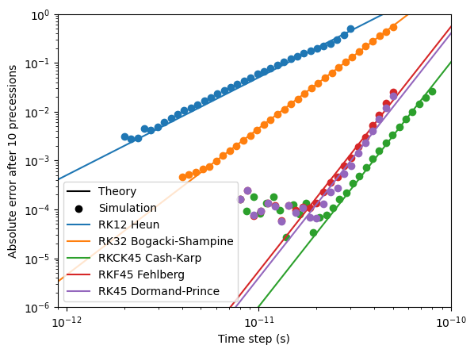
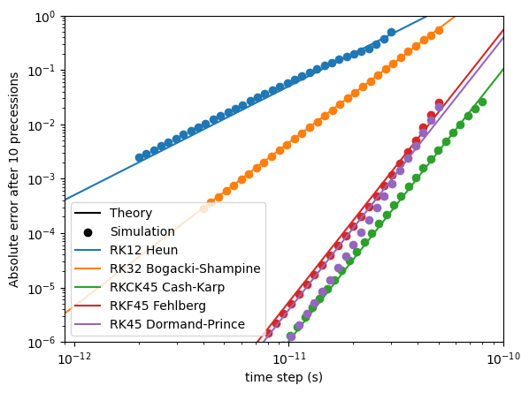

Single and double floating-point precision#
mumax⁺ can use either single (32-bit) or double (64-bit) floating-point precision.
By default, single precision is used.
Choosing a precision#
The choice of floating-point precision affects all of mumax⁺, and must therefore be made before the line
import mumaxplus
is reached.
Two switches determine which precision will then be loaded, as listed below in descending order of priority.
Both accept the values SINGLE/1/32 for single precision and DOUBLE/2/64 for double precision.
The
--mumaxplus-fp-precisioncommand-line flag. Example:python some_mumax_script.py --mumaxplus-fp-precision DOUBLE
The
MUMAXPLUS_FP_PRECISIONenvironment variable. If set globally on your system, this will also affect the compilation process, as explained below. It can also be set locally inside a single Python script by writingimport os os.environ["MUMAXPLUS_FP_PRECISION"] = "DOUBLE"
before the
import mumaxplusstatement.
The precision ultimately used by mumax⁺ can be accessed as mumaxplus.FP_PRECISION, which will be either "SINGLE" or "DOUBLE".
Compilation#
Compiling mumax⁺ normally results in two binaries: one for single and one for double precision.
However, if the environment variable MUMAXPLUS_FP_PRECISION is set, only one binary will be produced, corresponding to the desired precision.
This can be useful to reduce compile time during development, if only one precision is needed.
Possible errors#
Using
MUMAXPLUS_FP_PRECISIONto compile the source code for only one floating-point precision, and then asking for the opposite precision with--mumaxplus-fp-precisionwhen running a script, will result in aModuleNotFoundError.Since the choice of precision must be made before the
import mumaxplusstatement, it is not possible to use single precision in one part of a script and double precision in another: these must be run in separate processes. Reloading mumax⁺ with a different floating-point precision during runtime may lead to a vast wealth of errors.
Example: error floor#
The floating-point precision used has a significant impact on the error floor.
Below, we compare the numerical and analytical result of 10 precessions of one spin in an external magnetic field of 0.1 T, with damping. Depending on the time step, this results in a different error. The minimum attainable error is dependent on the floating-point precision used.
Show code
import os
os.environ["MUMAXPLUS_FP_PRECISION"] = "SINGLE"
import matplotlib.pyplot as plt
import numpy as np
from math import acos, atan, pi, exp, tan, sin, cos, sqrt
from mumaxplus import *
from mumaxplus.util import *
def magnetic_moment_precession(time, initial_magnetization, hfield_z, damping):
"""Return the analytical solution of the LLG equation for a single magnetic
moment and an applied field along the z direction.
"""
mx, my, mz = initial_magnetization
theta0 = acos(mz)
phi0 = atan(my / mx)
freq = GAMMALL_DEFAULT * hfield_z / (1 + damping ** 2)
phi = phi0 + freq * time
theta = pi - 2 * atan(exp(damping * freq * time) * tan(pi / 2 - theta0 / 2))
return np.array([sin(theta) * cos(phi), sin(theta) * sin(phi), cos(theta)])
def single_system(method, dt):
"""This function simulates a single spin in a magnetic field of 0.1 T without damping.
Returns the absolute error between the simulation and the exact solution.
Parameters:
method -- The used simulation method
dt -- The time step
"""
# --- Setup ---
world = World(cellsize=(1e-9, 1e-9, 1e-9))
magnetization = (1/np.sqrt(2), 0, 1/np.sqrt(2))
damping = 0.001
hfield_z = 0.1 # External field strength
duration = 2*np.pi/(GAMMALL_DEFAULT * hfield_z) * (1 + damping**2) * 10 # Time of 10 precessions
magnet = Ferromagnet(world, grid=Grid((1, 1, 1)))
magnet.enable_demag = False
magnet.magnetization = magnetization
magnet.alpha = damping
magnet.aex = 10e-12
magnet.msat = 1/MU0
world.bias_magnetic_field = (0, 0, hfield_z)
# --- Run the simulation ---
world.timesolver.set_method(method)
world.timesolver.adaptive_timestep = False
world.timesolver.timestep = dt
world.timesolver.run(duration)
output = magnet.magnetization.average()
# --- Compare with exact solution ---
exact = magnetic_moment_precession(duration, magnetization, hfield_z, damping)
error = np.linalg.norm(exact - output)
return error
method_names = ["Heun", "BogackiShampine", "CashKarp", "Fehlberg", "DormandPrince"]
exact_names = ["Heun", "Bogacki-Shampine", "Cash-Karp", "Fehlberg", "Dormand-Prince"]
RK_names = ["RK12", "RK32", "RKCK45", "RKF45", "RK45"]
exact_order = [2, 3, 5, 5, 5]
dts_lower = [2e-12, 4e-12, 8e-12, 8e-12, 8e-12] # Lower bounds for the time steps
dts_upper = [3e-11, 5e-11, 8e-11, 5e-11, 5e-11] # Upper bounds for the time steps
N_dens = 30 # Amount of datapoints between two powers of 10
dts = [np.logspace(np.log10(dts_lower[i]), np.log10(dts_upper[i]), int(N_dens*(np.log10(dts_upper[i]) - np.log10(dts_lower[i])))) for i, _ in enumerate(method_names)] # Time step arrays
# --- Plotting ---
plt.xscale('log')
plt.yscale('log')
plt.xlim((0.9e-12, 1e-10))
plt.ylim((1e-6, 1))
plt.xlabel("Time step (s)")
plt.ylabel("Absolute error after 10 precessions")
plt.plot([], [], color="black", label="Theory") # Labels for theoretical results
plt.scatter([], [], marker="o", color="black", label="Simulation") # Labels for simulated results
# --- Simulation Loops ---
orders = {}
for i, method in enumerate(method_names):
error = np.zeros(shape=dts[i].shape)
for j, dt in enumerate(dts[i]):
err = single_system(method, dt)
error[j] = err
# Find the order
log_dts, log_error = np.log10(dts[i]), np.log10(error)
order = np.polyfit(log_dts, log_error, 1)[0]
orders[exact_names[i]] = order
plt.scatter(dts[i], error, marker="o", zorder=2)
intercept = np.polyfit(log_dts[-10:], log_error[-10:] - log_dts[-10:] * exact_order[i], 0) # Only fit the end of the lines
plt.plot(np.array([1e-14, 1e-9]), (10**intercept)*np.array([1e-14, 1e-9])**exact_order[i], label=f"{RK_names[i]} {exact_names[i]}")
plt.legend()
plt.show()
With SINGLE precision, the error floor after 10 precessions is around \(10^{-4}\):
{kind=link}

With DOUBLE precision, however, the error floor reaches much lower:
{kind=link}
